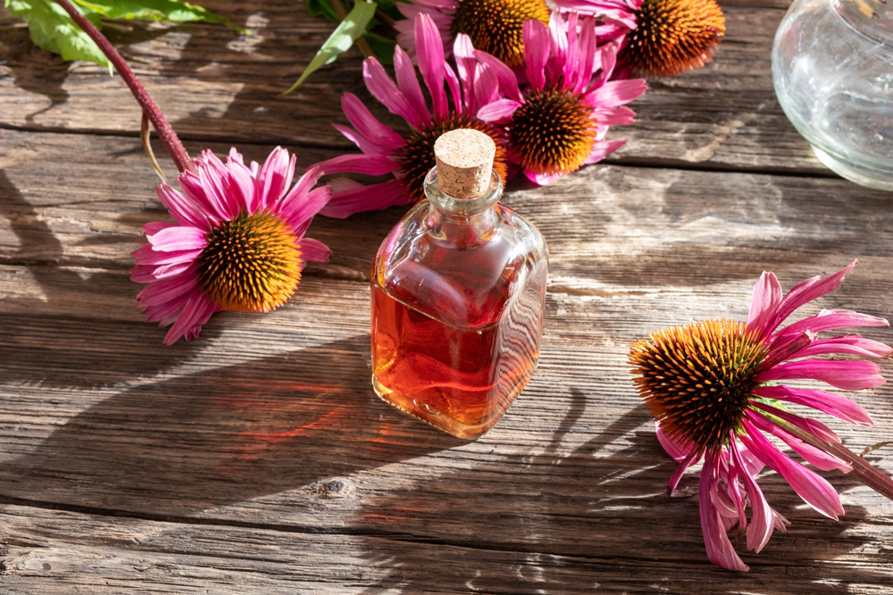

Echinacea
April 29 2021,
Dušica Pavlović
CONFLOWER. The success story of coneflower began in the land of many opportunities - America. About two centuries ago it was observed that Sioux Indians used the juice from the coneflower to treat their wounds with great success.
This was reason enough to look for the secret of this medicinal plan. Today, coneflower extracts are among the most important plant-based immune stimulants.
One of the three types of coneflower that are used in naturopathy and homeopathy, is the most commonly used - the fresh plant juice of the purple coneflower (E. purpurea). But extracts from the roots of the pale-colored coneflower (E. pallida) are also used in medicinal products. The effect of the narrow-leaved coneflower (E. angustifolia) has been classified as slightly effective in a study couple of years ago.
At the end of the last century, Echinacea was in the top ten of the American natural food market, accounting for 10% of total sales of herbal supplements.
Medical application
Fresh plant juices and tinctures or alcoholic extracts from the roots and the herbs at the beginning of flowering have the property of strengthening the human body's defense against infection by non-specific stimulation of the immune system.
Various ingredients seem to be involved in the immunomodulatory effect. Especially in the case of bacterial infections, extracts lead to a faster resolution of the diseases. Viral diseases - e.g. herpes simplex infections - are favorably influenced by coneflower in combination with other immunomodulators. The effects of the coneflower extracts can be used prophylactically or curatively. It can also be administered in combination with antibiotics or chemotherapeutic agents. The application time should not exceed eight weeks.
The effect of Echinacea preparations for strengthening the body's own defense against flu-like infections or feverish diseases of the upper respiratory tract, i.e. diseases of the ear, nose and throat area, is recognized.
But the coneflower also has its place in therapeutic applications for drugs that are used to treat diseases of the lower urinary tract and the prostate.
Both in the phase of acute illness and to prevent recurring infections, echinacea preparations have proven themselves in the diseases mentioned. If coneflower extracts are used in the early stages of acute colds, there is a particularly good chance that the infection will subside quickly.
In high-performance athletes, attempts are made to reduce the risk of infection by administering coneflower preparations. More recent studies also deal with the administration of Echinacea preparations for tumor diseases.
In medicinal products for external use, coneflower extracts are found in ointments that promote wound healing; But the coneflower is also used in toothpastes together with other plant extracts to tighten the gums and keep them healthy.
The optimal dosage for therapy with high-quality echinacea preparations is 60 drops 3 times a day for adults. Increasing the dose does not lead to any improvement in the effect; at lower doses, however, the successes were less. An application time of 6–8 weeks should not be exceeded. There are also recommendations that the consumption of the coneflower extracts should be discontinued after 2 weeks.
Contraindications
Occasionally, the coneflower, as well as other members of the coneflower family, has allergic reactions as a side effect.
Use in tuberculosis, leukosis, collagenosis, multiple sclerosis, AIDS diseases, HIV infection or other autoimmune diseases is not to be recommended and is considered a contraindication.
Home made tincture
There are several ways to use Echinacea. It is available in pharmacies as tinctures, tablets, teas or juices.
But you can also make your own tincture relatively easily:
- Collect about 100 grams of coneflower flowers and let them dry.
- Cut the flowers into small pieces and place them in a jar.
- Pour in 200 milliliters of 40% alcohol (from the pharmacy).
- Let the mixture sit for about a month. Shake the jar every three days.
- Then you can fill the mixture through a sieve and using a funnel into a small bottle.
- For the dosage you can orientate yourself with the drops available in the pharmacy.
Photo credits:
iStockphoto